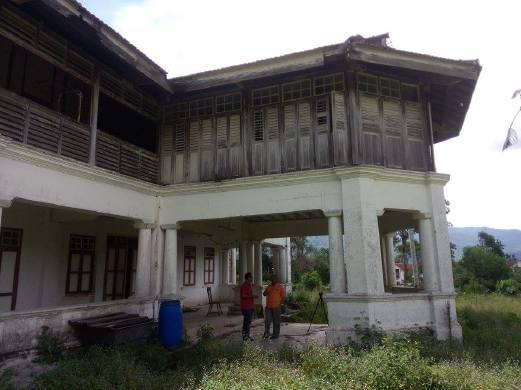

History

Old Building of Rumah Barkat Johor
Pertubuhan Kebajikan Anak-anak Yatim Johor(PKAYJ) was built on a 4-acre plot of land located on Jalan Bukut Cagar, Johor Bahru. The building site has been endowed by the Johor Islamic Religious Council. This office building was originally made by a plank wood building with two pillars under which there was a space below to accommodate staff.
New Building of Rumah Barkat Johor
In 2012, Rumah Barkat Johor office was transformed and built using ready-made stone at a cost of RM2 million. The cost of building this office are donations from the public. Furthermore, this home is under management of Pertubuhan Kebajikan Anak-anak Yatim Johor (PKAYJ). This foundation was established with the aim of defending orphans children across the state.
Pertubuhan Kebajikan Anak-Anak Yatim Johor (PKAYJ) was established on Sunday 1978 located in the Operations Room of the District Office, Jalan Duke Johor, Johor Darul Takzim. With the full spirit of awareness and conviction of businessmen, volunteers, organizations, politics, voluntary welfare, government officials and businessmen present on the day have agreed to establish P.K.A.Y.J to provide assistance, help, guidance, sprititual and physical education so that these orphans children becoma a person who defends their life and pious.
On 30th October 1979, the State Government of Johor Darul Takzim has lent a officers residential house at No.188, Jalan Bukit Cagar, 80300 Johor Bahru, Johor Darul Takzim to this organization and P.K.A.Y.J and named it "Rumah Barkat".